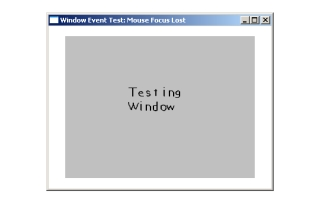

窗口事件是像窗口缩放、窗口最大化、窗口最小化这些事件。直到现在，我们还不能对我们的窗口做多少事，主要是因为处理一个可缩放的窗口意味着更多的工作量。本节课向你展示了如何编写一个可调节大小的窗口并且处理在窗口变化过程中产生的事件。//我们的Window类
class Window
{
private:
//窗口是否是窗口化的
bool windowed;
//窗口是否工作正常
bool windowOK;
public:
//构造函数
Window();
//处理窗口事件
void handle_events();
//切换全屏/非全屏
void toggle_fullscreen();
//检查窗口是否发生了错误
bool error();
};
现在我们有这样的一个Window类，它能管理所有有关可缩放窗口的事情。
我们有两个标志变量。其中，"windowed"标志跟踪了窗口是窗口化的还是全屏的，"windowOK"指示了窗口是否可用。
然后我们有一个构造函数，一个处理事件的函数，一个切换窗口化/全屏模式的函数，以及一个错误检测函数。
我们有两个标志变量。其中，"windowed"标志跟踪了窗口是窗口化的还是全屏的，"windowOK"指示了窗口是否可用。
然后我们有一个构造函数，一个处理事件的函数，一个切换窗口化/全屏模式的函数，以及一个错误检测函数。
bool init()
{
//初始化SDL的所有子系统
if( SDL_Init( SDL_INIT_EVERYTHING ) == -1 )
{
return false;
}
//如果所有操作成功
return true;
}
这是我们的初始化函数。
因为所有与窗口有关的东西都在一个单独的类中处理，所以这里我们要做的仅仅是初始化SDL。
因为所有与窗口有关的东西都在一个单独的类中处理，所以这里我们要做的仅仅是初始化SDL。
Window::Window()
{
//设置窗口
screen = SDL_SetVideoMode( SCREEN_WIDTH, SCREEN_HEIGHT, SCREEN_BPP, SDL_SWSURFACE | SDL_RESIZABLE );
//如果发生错误
if( screen == NULL )
{
windowOK = false;
return;
}
else
{
windowOK = true;
}
//设置窗口标题
SDL_WM_SetCaption( "Window Event Test", NULL );
//设置窗口状态标志
windowed = true;
}
在Window类的构造函数中，我们创建了一个窗口。因为我们想让它可缩放，所以我们传入了
然后我们检查screen是否为NULL。如果是的话，我们将“windowOK”设为false，这样可以让我们知道窗口出了问题。
如果所有操作成功完成，我们将“windowOK”设为true，并设置窗口标题，然后，由于我们的窗口一开始是窗口化的，我们还要将"windowed"标志设为true。
SDL_RESIZABLE标志。然后我们检查screen是否为NULL。如果是的话，我们将“windowOK”设为false，这样可以让我们知道窗口出了问题。
如果所有操作成功完成，我们将“windowOK”设为true，并设置窗口标题，然后，由于我们的窗口一开始是窗口化的，我们还要将"windowed"标志设为true。
void Window::toggle_fullscreen()
{
//如果窗口是窗口化的
if( windowed == true )
{
//设置窗口为全屏模式
screen = SDL_SetVideoMode( SCREEN_WIDTH, SCREEN_HEIGHT, SCREEN_BPP, SDL_SWSURFACE | SDL_RESIZABLE | SDL_FULLSCREEN );
//如果发生了错误
if( screen == NULL )
{
windowOK = false;
return;
}
//设置窗口状态标志
windowed = false;
}
//如果窗口是全屏的
else if( windowed == false )
{
//将窗口窗口化
screen = SDL_SetVideoMode( SCREEN_WIDTH, SCREEN_HEIGHT, SCREEN_BPP, SDL_SWSURFACE | SDL_RESIZABLE );
//如果发生了错误
if( screen == NULL )
{
windowOK = false;
return;
}
//设置窗口状态标志
windowed = true;
}
}
在这个程序里，我加入了按“Enter”键切换窗口/全屏的功能，你只能在可缩放的窗口上这样做。这就是切换窗口化/全屏模式的函数。
当“Enter”键被按下时，我们要检查一下窗口是否是窗口化的。如果是窗口化的，我们就调用
当“Enter”键被按下时，我们要检查一下窗口是否是窗口化的。如果是窗口化的，我们就调用
SDL_SetVideoMode()函数，并传入SDL_FULLSCREEN标志，来切换到全屏模式，并将“windowed”标志设为false。如果现在已经是全屏模式，我们就以普通的方式调用SDL_SetVideoMode()来切换回窗口模式，并将“windowed”标志设为true。void Window::handle_events()
{
//如果窗口有错误
if( windowOK == false )
{
return;
}
//如果窗口被缩放
if( event.type == SDL_VIDEORESIZE )
{
//重新设定窗口大小
screen = SDL_SetVideoMode( event.resize.w, event.resize.h, SCREEN_BPP, SDL_SWSURFACE | SDL_RESIZABLE );
//如果出现错误
if( screen == NULL )
{
windowOK = false;
return;
}
}
这里我们开始做事件处理，首先要做的是检查窗口是否是可用的。然后我们处理视窗缩放事件。
无论何时，只要窗口被缩放，你都必须使用
无论何时，只要窗口被缩放，你都必须使用
SDL_SetVideoMode()重新设定窗口。新窗口的尺寸存储在我们的事件结构体中，宽和高分别是event.resize.w 和 event.resize.h ，所以你可以很容易地将窗口设定为新的尺寸。 //如果“Enter”键被按下
else if( ( event.type == SDL_KEYDOWN ) && ( event.key.keysym.sym == SDLK_RETURN ) )
{
//切换全屏/窗口
toggle_fullscreen();
}
当“Enter”键被按下时，我们切换全屏模式或窗口模式。
//如果窗口焦点发生变化
else if( event.type == SDL_ACTIVEEVENT )
{
//如果窗口被最小化或还原
if( event.active.state & SDL_APPACTIVE )
{
//如果程序不再是激活状态
if( event.active.gain == 0 )
{
SDL_WM_SetCaption( "Window Event Test: Iconified", NULL );
}
else
{
SDL_WM_SetCaption( "Window Event Test", NULL );
}
}
这里的
这里我们检查窗口是否由于最小化或还原而变为非激活或激活状态。当窗口被最小化时，
在这个程序里，我们通过改变窗口标题来提示用户发生了这些变化。
SDL_ACTIVEEVENT又是一种事件。一个SDL_ACTIVEEVENT事件在程序的窗口、键盘或鼠标变为激活状态或非激活状态时产生。这里我们检查窗口是否由于最小化或还原而变为非激活或激活状态。当窗口被最小化时，
SDL_ActiveEvent中的“gain”值为0。当窗口被还原时，“gain”的值为1。在这个程序里，我们通过改变窗口标题来提示用户发生了这些变化。
//如果键盘焦点产生了事件
else if( event.active.state & SDL_APPINPUTFOCUS )
{
//如果程序失去了键盘焦点
if( event.active.gain == 0 )
{
SDL_WM_SetCaption( "Window Event Test: Keyboard focus lost", NULL );
}
else
{
SDL_WM_SetCaption( "Window Event Test", NULL );
}
}
//如果鼠标焦点产生了事件
else if( event.active.state & SDL_APPMOUSEFOCUS )
{
//如果程序失去了鼠标焦点
if( event.active.gain == 0 )
{
SDL_WM_SetCaption( "Window Event Test: Mouse Focus Lost", NULL );
}
else
{
SDL_WM_SetCaption( "Window Event Test", NULL );
}
}
}
这里处理了键盘焦点和鼠标焦点上的事件。
（要检查窗口焦点时，）记得先检查一下
SDL_APPINPUTFOCUS 指的是键盘焦点的变化。SDL_APPMOUSEFOCUS 指的是鼠标焦点的变化。和SDL_APPACTIVE 类似，当失去焦点时，"gain"的值为0，当恢复焦点时，“gain”的值为1。（要检查窗口焦点时，）记得先检查一下
SDL_APPACTIVE，因为与“state”做“二进制与”计算会产生多种激活事件。译者注：不太清楚作者的意思，原文是：Remember to check for SDL_APPACTIVE first because bitwise AND comparisons with "state" will report other active events.
我有两种理解方式：
我有两种理解方式：
- 检查某种焦点的变化时，需要先用二进制与运算判断是否是我关心的那种焦点。
- 在做多种焦点判断时，需要先判断
SDL_APPACTIVE，否则后面的二进制与运算会得出其他类型的激活事件。
//如果窗口被修改
else if( event.type == SDL_VIDEOEXPOSE )
{
//Update the screen
if( SDL_Flip( screen ) == -1 )
{
//If there's an error
windowOK = false;
return;
}
}
}
最终，我们要处理
一个
SDL_VIDEOEXPOSE 事件。一个
SDL_VIDEOEXPOSE 事件是在窗口被程序外部的东西（译者注：如系统的窗口管理器）修改时发生。我们通过更新窗口来处理这个事件。bool Window::error()
{
return !windowOK;
}
这是我们用来检查窗口是否包含错误的函数。
我们将“windowOK”取反，因为当window是OK时，窗口是没有错误的，当window不是OK时，窗口中就有错误了。
我们将“windowOK”取反，因为当window是OK时，窗口是没有错误的，当window不是OK时，窗口中就有错误了。
//退出标志
bool quit = false;
//初始化
if( init() == false )
{
return 1;
}
//创建一个窗口
Window myWindow;
//如果窗口发生错误
if( myWindow.error() == true )
{
return 1;
}
//加载文件
if( load_files() == false )
{
return 1;
}
在我们的main函数顶端，我们在初始化完成后创建了一个Window对象。然后，我们检查一下是否有错并继续进行一些常规操作。
//当用户还没有退出时
while( quit == false )
{
//当有事件需要处理时
while( SDL_PollEvent( &event ) )
{
//处理窗口事件
myWindow.handle_events();
//如果退格键被按下了
if( ( event.type == SDL_KEYDOWN ) && ( event.key.keysym.sym == SDLK_ESCAPE ) )
{
//退出程序
quit = true;
}
//如果用户点击了窗口右上角的关闭按钮
if( event.type == SDL_QUIT )
{
//退出程序
quit = true;
}
}
//如果窗口出错
if( myWindow.error() == true )
{
return 1;
}
//用白色填充整个窗口
SDL_FillRect( screen, ≻reen->clip_rect, SDL_MapRGB( screen->format, 0xFF, 0xFF, 0xFF ) );
//居中显示图像
apply_surface( ( screen->w - testing->w ) / 2, ( screen->h - testing->h ) / 2, testing, screen );
//更新屏幕
if( SDL_Flip( screen ) == -1 )
{
return 1;
}
}
这是我们的主循环。没有什么需要特别指明的，除了一点，那就是我们需要记得在渲染窗口前检查一下窗口是否有错误，我们不能在一个不可用的窗口中进行渲染。